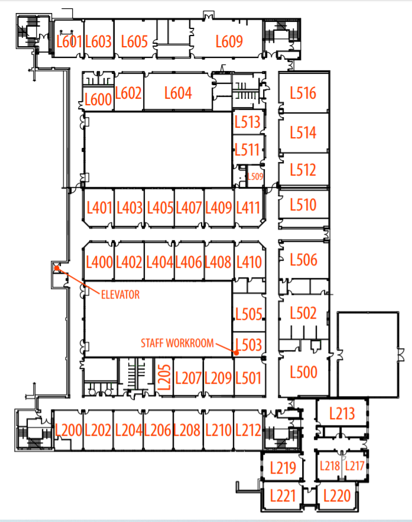

<header>
    <script src="https://ajax.googleapis.com/ajax/libs/jquery/3.3.1/jquery.min.js"></script>

    <script type="text/javascript" src="https://cdnjs.cloudflare.com/ajax/libs/maphilight/1.4.0/jquery.maphilight.min.js"></script>
        
    <link rel="stylesheet" href="challange.css">
    
    <link rel="stylesheet" href="https://cdnjs.cloudflare.com/ajax/libs/font-awesome/4.7.0/css/font-awesome.min.css">
</header>
<html>
    <meta name="viewport" content="width=device-width, initial-scale=1">
    <body>
        

        <map name="image-map">
            
           <area  id="L601" title="L601" coords="140,96,90,32" shape="rect">  
            

        </map>
        
        <div id="linuxModal" class="modal">

              <!-- Modal content -->
                <div class="modal-content">
                    
              <!-- Griffin or Yojan When you use the code for solo/team found in register to create a tabel like situation. Ask me if you don't understand it-->

                    <div class="modal-header">
                      <span class="close">&times;</span>
                      <h2>Linux no 1</h2>
                        
                <!--We would probably change the font size of this heading -->
                    </div>

                    <div class="modal-body">
                      <p>What is linux?</p>
                    <!-- I have centered <p> so u might need to add a id or class to fix it-->
                        
                    <input type="text" id="modal-input" placeholder="Flag" required>
                        
                     <span class="Attempt_input"></span>         <button class="model_Submit">Submit</button>

                    </div>
                    
                </div>
        </div>
        
    </body>
</html>

<!-- we need to add code that makes the submit work if we press enter-->

<script>
    var modal = document.getElementById("linuxModal");

    // Get the button that opens the modal
    var area = document.getElementById('L601');
    
    // Get the <span> element that closes the modal
    var span = document.getElementsByClassName("close")[0];

    // When the user clicks the button, open the modal 
    area.onclick = function() {
      modal.style.display = "block";
    }

    // When the user clicks on (x) the modal is closed
    span.onclick = function() {
      modal.style.display = "none";
    }

    // When the user clicks anywhere outside of the modal, close it
    window.onclick = function(event) {
      if (event.target == modal) {
        modal.style.display = "none";
  }
}
</script>

<script>
    
$(function() {
    $('.map').maphilight();
});
    $('#topbar').dropdown()

    
</script>
